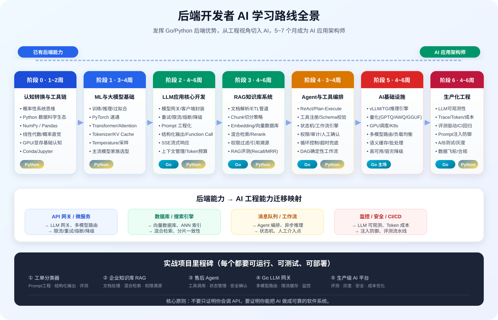
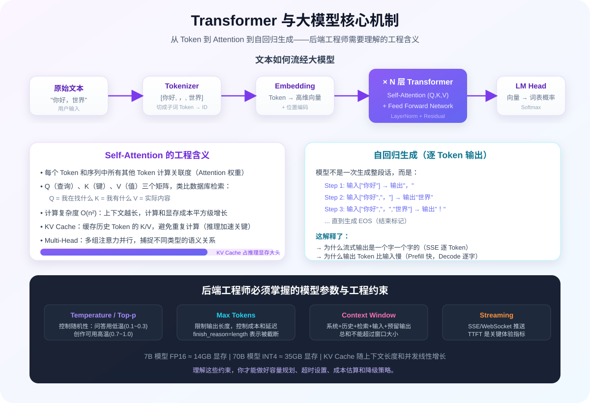
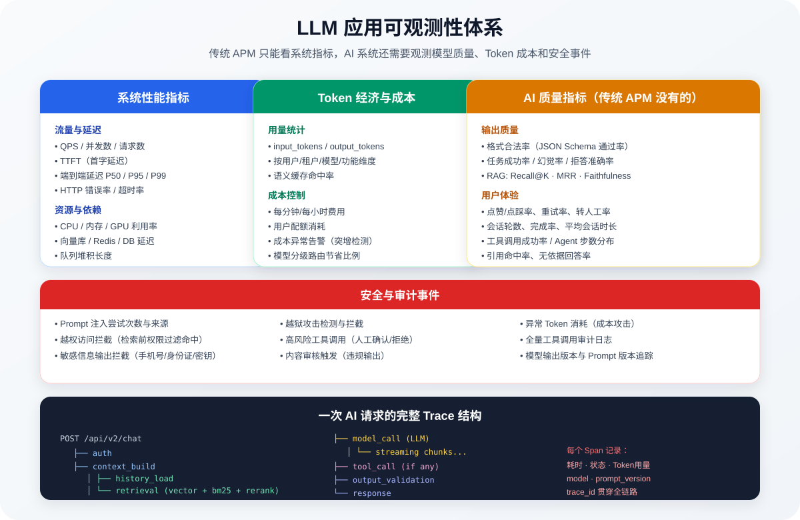
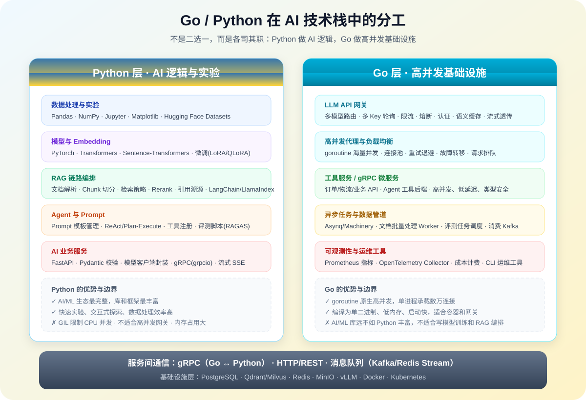

后端开发者的 AI 学习路线：从 Go/Python 工程师到 AI 应用架构师
写在前面：你不是从零开始
如果你是一名有经验的 Go/Python 后端开发者，你已经拥有转型 AI 工程最稀缺的底子：设计可靠系统的能力。
很多零基础路线会让你从 Python 语法、HTTP 协议、数据库开始学，但你已经跳过了这些。你需要的不是重新学编程，而是建立一张「后端能力 → AI 工程能力」的映射表，把已有的分布式、高并发、数据管道、可观测性经验迁移到 AI 系统中。
这条路线的核心逻辑是：
你已经会的后端能力 → AI 时代的新能力
─────────────────────────────────────────────────────
API 设计 / 网关 → LLM 网关 / 模型路由
数据库 / 索引 → 向量数据库 / Embedding 检索
缓存 / 消息队列 → 语义缓存 / 异步推理管道
微服务编排 / 状态机 → Agent 工作流 / 工具编排
监控 / 日志 / 追踪 → LLM 可观测性 / Token 成本
安全 / 鉴权 / 审计 → Prompt 注入防御 / AI 安全
CI/CD / 灰度发布 → Prompt 版本 / 模型评测 / A/B

一、定位：后端工程师在 AI 时代的三种角色
不要把「学 AI」等同于「成为算法工程师」。对后端开发者来说，有三条高价值路径，按算法浓度从低到高排列：
| 角色 | 核心职责 | 算法要求 | 后端技能复用度 | 推荐优先级 |
|---|---|---|---|---|
| AI 应用工程师 | 用大模型 API + RAG + Agent 构建业务系统 | 理解概念即可 | 90% | ⭐⭐⭐⭐⭐ |
| AI 基础设施工程师 | 模型网关、推理服务、向量库、GPU 调度 | 中等（系统优化） | 80% | ⭐⭐⭐⭐ |
| AI 平台/MLOps 工程师 | 训练平台、特征平台、评测平台、数据飞轮 | 中高 | 60% | ⭐⭐⭐ |
这条路线主要覆盖前两种角色，也是后端开发者转型性价比最高的方向。如果你对模型训练和算法研究有强烈兴趣，可以在掌握工程链路后再向第三阶段深入。
判断你是否走在正确的路上，看三个问题：
- 你能否把一个业务问题拆成「确定性代码 + 模型推理 + 数据检索」三部分，并说清楚每部分的边界？
- 你能否设计一次 AI 请求的完整链路：入口、鉴权、上下文构建、检索、模型调用、工具执行、输出校验、日志、成本？
- 当 AI 功能效果不好时，你能否通过评测、日志和实验定位问题出在 Prompt、检索、切分、模型还是数据，而不是靠「感觉」调参？
二、阶段 0：认知转换与工具链（1 \~ 2 周）
2.1 从确定性思维到概率性思维
后端开发习惯了「输入 A 必然输出 B」的确定性系统。大模型是概率性的——同样输入可能有不同输出，可能产生幻觉，可能格式错误。这不是 bug，而是模型的本质特性。
工程上的应对方式不是「让模型变确定」，而是用后端熟悉的手段兜底：
| 后端手段 | 在 AI 系统中的应用 |
|---|---|
| 输入校验（Validator） | Prompt 注入检测、敏感词过滤、参数 schema 校验 |
| 输出校验 | JSON Schema 校验、Pydantic 模型、业务规则检查 |
| 重试机制 | 格式错误自动重试、模型不可用切换备用模型 |
| 超时控制 | 模型调用、检索、工具执行分别设 timeout |
| 降级兜底 | 模型不可用时返回模板答案、转人工、缓存命中 |
| 幂等设计 | Agent 工具调用幂等、写操作确认机制 |
| 断路器 | 模型服务商连续失败时熔断，保护整体系统 |
2.2 Python AI 工具链速通
你已经会 Python，但数据科学和 AI 生态有自己的工具集。不需要全部精通，先建立基本认知：
| 工具 | 用途 | 学到什么程度 |
|---|---|---|
| Conda / uv | Python 环境管理 | 能创建隔离环境、安装包 |
| Jupyter Lab | 交互式实验 | 能运行 Notebook、做数据探索 |
| NumPy | 数值计算基础 | 理解 ndarray、广播、矩阵运算 |
| Pandas | 数据处理 | 读取 CSV/JSON、过滤、聚合、基本分析 |
| Matplotlib / Plotly | 数据可视化 | 画折线图、柱状图、散点图 |
| Hugging Face Hub | 模型和数据集仓库 | 能搜索模型、下载模型、看模型卡 |
| tqdm | 进度条 | 简单循环显示进度 |
练习任务：用 Pandas 分析一个 CSV 数据集（比如客服对话记录），统计问题类型分布、平均响应长度，并用 Matplotlib 画图。
2.3 数学最小必要知识
不需要像算法工程师那样推导公式，但需要建立工程直觉。按需学习，用到再查：
| 数学领域 | 必须理解的概念 | 对工程的指导意义 |
|---|---|---|
| 线性代数 | 向量、矩阵乘法、点积、余弦相似度、维度 | Embedding 是什么、向量检索为什么 work、高维诅咒 |
| 概率统计 | 概率分布、条件概率、贝叶斯、期望、采样 | Temperature/Top-p 的作用、模型评估、A/B 测试 |
| 微积分 | 导数、梯度、链式法则（概念层面） | 反向传播是什么、梯度下降为什么能优化 |
| 信息论 | 熵、交叉熵、KL 散度（概念层面） | 损失函数含义、困惑度指标 |
建议：不要花一两个月刷数学书。先学线性代数的向量和矩阵部分（3 \~ 5 天），其他在后续阶段遇到时补。3Blue1Brown 的《线性代数的本质》视频系列是建立直觉的最佳材料。
2.4 GPU 基础认知
后端开发者大多熟悉 CPU 和内存，但 AI 离不开 GPU。不需要会写 CUDA 内核，但要理解约束：
| 概念 | 工程含义 |
|---|---|
| 显存（VRAM） | 模型参数、KV Cache、激活值都占显存，决定能跑多大模型 |
| FP32 / FP16 / BF16 / INT8 | 数值精度，精度越低显存占用越小、速度越快 |
| KV Cache | Transformer 推理时缓存历史 Token 的 Key/Value，加速生成 |
| Batch Size | 一次同时处理多少请求，影响吞吐量和延迟 |
| CUDA | NVIDIA 的并行计算平台，大多数 AI 框架依赖它 |
三、阶段 1：机器学习与大模型基础（3 \~ 4 周）
3.1 机器学习核心概念
目标不是会调参训练模型，而是理解模型在做什么、为什么会出错、怎么评估好坏。
| 概念 | 工程视角的理解 |
|---|---|
| 训练（Training） | 用大量数据调整模型参数，让模型学会模式 |
| 推理（Inference） | 训练好的模型接收输入、产生输出的过程 |
| 监督学习 | 有标注数据的学习（分类、回归） |
| 过拟合 / 欠拟合 | 模型背了训练数据但泛化差 / 连训练数据都没学会 |
| 训练集 / 验证集 / 测试集 | 训练用、调参用、最终评估用，不能混用 |
| 损失函数（Loss） | 衡量模型预测和真实答案差距的数字 |
| 梯度下降 | 根据 Loss 调整参数，让 Loss 变小 |
| 评估指标 | Accuracy、Precision、Recall、F1、AUC 等 |
用你熟悉的后端类比：
训练 ≈ 离线 ETL 任务跑批，推理 ≈ 在线服务处理请求。 过拟合 ≈ 服务只在测试环境正常，上线就挂。 验证集 ≈ 预发环境，测试集 ≈ 线上真实流量。
3.2 神经网络与深度学习直觉
必须掌握的最小知识集：
- 感知机到神经网络：多个神经元组合可以表示复杂函数。
- 激活函数（ReLU、Sigmoid、Softmax）：引入非线性，多分类概率输出。
- 反向传播：从输出层往回算梯度，更新每一层参数。
- 深度学习为什么深：层数越多，能表示的特征越抽象。
- 常见网络结构：CNN（图像）、RNN/LSTM（序列，已过时）、Transformer（当前主流）。
不需要从零手写神经网络。推荐用 PyTorch 跑一个官方的 MNIST 手写数字识别示例，理解「数据 → 模型 → 损失 → 反向传播 → 优化」的循环即可。
3.3 Transformer 架构精讲
这是大模型的基石，必须理解到能给同事讲清楚的程度：

| 组件 | 作用 | 工程含义 |
|---|---|---|
| Tokenizer | 把文本切分成 Token（子词单位） | 中文/英文分词差异、Token 成本计算、特殊 Token |
| Embedding 层 | 把每个 Token 映射成高维向量 | 语义相似的词向量接近 |
| 位置编码（Positional Encoding） | 告诉模型 Token 的顺序 | Transformer 本身不感知位置 |
| Self-Attention | 每个 Token 关注序列中其他 Token | 计算复杂度 O(n²)，长文本成本高 |
| Multi-Head Attention | 多组注意力并行，捕捉不同关系 | 模型参数大头 |
| Feed Forward Network | 对每个位置独立做非线性变换 | 增加模型表达能力 |
| LayerNorm / Residual Connection | 稳定训练、缓解梯度消失 | 深层网络必备 |
| KV Cache | 缓存已计算的 Key/Value | 推理加速的关键，占显存 |
关键理解要点：
- 自回归生成：大模型一次生成一个 Token，把输出追加到输入再生成下一个，直到结束。这就是为什么流式输出是一个字一个字蹦的。
- 上下文窗口：Attention 能看到的最大 Token 数。超出需要截断或压缩。
- Temperature 和 Top-p：控制采样随机性。Temperature 越低越确定（趋近贪心解码），越高越发散。
- 预训练 + 微调：预训练在海量文本上学语言能力，微调（SFT、RLHF、DPO）让模型学会对话和遵循指令。
3.4 主流大模型家族
建立对模型生态的基本认知：
| 模型系列 | 代表模型 | 特点 | 接入方式 |
|---|---|---|---|
| OpenAI GPT | GPT-4o、GPT-4 Turbo、o1 | 能力强、生态成熟、成本较高 | API |
| Anthropic Claude | Claude 3.5 Sonnet、Claude 3 Opus | 长上下文、安全对齐好、代码强 | API |
| Google Gemini | Gemini 1.5 Pro/Flash | 多模态强、长上下文 | API / Vertex AI |
| Meta LLaMA | LLaMA 3.1 8B/70B/405B | 开源、可商用、社区活跃 | 自部署 / 托管 |
| 阿里 Qwen | Qwen2.5 系列 | 中文好、尺寸全、开源 | API / 自部署 |
| DeepSeek | DeepSeek-V3、DeepSeek-R1 | 推理能力强、开源、性价比高 | API / 自部署 |
| Mistral | Mistral Large、Mixtral | 欧洲代表、MoE 架构高效 | API / 自部署 |
选型时考虑维度：能力（任务匹配度）、成本（Token 价格）、延迟、上下文长度、数据合规（是否可出境）、部署方式（API vs 私有化）。
3.5 实战练习
- 用 Hugging Face
transformers库在本地跑一个小模型（如 Qwen2.5-0.5B 或 GPT-2），观察文本生成。 - 用 OpenAI SDK（或兼容 API）写一个脚本，对比不同 Temperature 下同一条 Prompt 的 20 次输出差异。
- 手算：一个 7B 模型用 FP16 加载需要多少显存？（答案：约 14GB）
四、阶段 2：大模型应用开发核心（4 \~ 6 周）
这是后端开发者的主战场。你会发现大多数模式和你做后端服务高度同构。
4.1 LLM 客户端封装与模型网关
不要在业务代码里到处直接调用厂商 SDK。 这和你不会在每个 handler 里直接写数据库连接是一个道理。
必须封装统一的模型客户端，处理这些横切关注点：
class ChatModel(ABC):
@abstractmethod
async def chat(
self,
messages: list[Message],
*,
temperature: float = 0.2,
max_tokens: int | None = None,
response_format: dict | None = None,
tools: list[ToolSchema] | None = None,
) -> ChatResponse:
...
class ChatResponse:
content: str
tool_calls: list[ToolCall]
usage: TokenUsage # input_tokens, output_tokens
finish_reason: str # stop / length / tool_calls / content_filter
model: str
latency_ms: int
网关层必须处理：
| 能力 | 实现要点 | 后端类比 |
|---|---|---|
| 多供应商抽象 | 统一接口，OpenAI/Claude/国产模型可替换 | 数据库驱动抽象 |
| 超时控制 | connect timeout、read timeout 分别设置 | HTTP 客户端超时 |
| 重试策略 | 仅对可重试错误（429/5xx）重试，指数退避+抖动 | API 重试 |
| 限流 | 按用户、租户、模型维度做令牌桶/漏桶 | API 网关限流 |
| 熔断降级 | 供应商连续失败时切备用模型或返回降级响应 | 微服务熔断器 |
| 负载均衡 | 多 API Key 轮询、多供应商按权重路由 | L4/L7 负载均衡 |
| 成本统计 | 记录 input/output tokens、按模型计价 | 计费系统 |
| 日志脱敏 | 请求/响应日志中过滤手机号、身份证、密钥 | 数据安全 |
| 请求追踪 | 注入 trace_id，贯穿 网关→检索→模型→工具 | 分布式追踪 |
Go 在这一层有天然优势：高并发、低内存、适合做网关。可以参考的开源项目：one-api（Go 编写的 LLM 网关）。
4.2 Prompt 工程化
Prompt 不是写散文，而是像代码一样管理：
Prompt 模板 = 角色 + 任务说明 + 上下文（变量注入） + 判断标准 + 输出格式 + 约束条件
Prompt 管理规范（和你管理配置/代码一样）：
| 要求 | 具体做法 |
|---|---|
| 版本化 | 每个 Prompt 有版本号，变更记录写清楚改了什么 |
| 参数化 | 业务变量通过 {{variable}} 注入，不手动拼接字符串 |
| 可测试 | 每个 Prompt 有测试样例集，改完跑回归 |
| 可回滚 | 新版本效果差时能切回旧版（和灰度发布一样） |
| 可观测 | 日志记录 prompt_version、model_name、输出质量 |
| 环境隔离 | 开发/测试/生产用不同 Prompt，和配置管理同理 |
进阶技巧：
| 技巧 | 适用场景 |
|---|---|
| Few-shot | 给模型 2 \~ 5 个示例，比纯指令更能稳定格式和判断标准 |
| Chain-of-Thought | 让模型先推理再给结论，适合数学、逻辑、复杂判断 |
| Self-Consistency | 多次采样取多数结果，提高可靠性（成本翻倍） |
| Structured Output / JSON Mode | 强制输出可解析 JSON，配合 schema 校验 |
| System Prompt 隔离 | 系统指令和用户输入物理隔离，降低注入风险 |
4.3 结构化输出与 Function Calling
这是把 LLM 接入业务系统的关键桥梁。模型负责「理解意图和生成参数」，代码负责「执行真实动作」。
Function Calling 的安全模型（极其重要）：
用户输入 → 模型判断调用哪个工具、生成参数
↓
代码层做参数校验（Pydantic）
↓
权限检查（user_id/tenant_id 强制注入）
↓
高风险操作 → 人工确认
↓
执行真实动作（数据库/API/文件）
↓
结果返回给模型 → 模型组织自然语言回复
工具设计原则：
- 工具粒度细且明确：一个工具做一件事，有清晰的 description。
- 绝对不要暴露万能工具：
run_sql、execute_command这类工具是安全灾难。 - 权限不能由模型决定：
user_id、tenant_id必须由代码从鉴权上下文注入，不能让模型生成。 - 参数必须校验：用 Pydantic/JSON Schema 校验模型生成的参数。
- 写操作要幂等且可审计：所有工具调用记录日志，高风险动作需要二次确认。
4.4 流式响应与实时交互
大模型生成是逐 Token 的，流式响应能大幅降低首字延迟（TTFT, Time To First Token）：
| 技术 | 适用场景 | 后端实现要点 |
|---|---|---|
| SSE (Server-Sent Events) | 单向流式输出（聊天机器人） | 设置 Content-Type: text/event-stream、处理断连重试 |
| WebSocket | 双向实时通信（语音对话、Agent 过程推送） | 连接管理、心跳、消息顺序 |
| 分块传输 (Chunked) | 文件流式处理、简单流式 | HTTP/1.1 chunked encoding |
注意事项：
- 流式响应中无法提前知道最终 Token 数，需要在结束时统计。
- 错误处理：流中途出错要发送错误事件，不能直接断开。
- 代理/网关层需关闭响应缓冲，否则流不起来（Nginx
proxy_buffering off）。
4.5 上下文工程
上下文窗口是稀缺资源，需要像管理内存一样管理：
系统 Prompt（角色、规则、格式）
+ 对话历史（最近 N 轮 + 摘要压缩）
+ 检索到的知识片段（RAG）
+ 工具定义和工具返回结果
+ 当前用户输入
─────────────────────────
≤ 模型上下文窗口 - 预留输出 Token
上下文管理策略：
- 滑动窗口：只保留最近 N 轮对话。
- 摘要压缩：对较早的对话用模型生成摘要，替换原始消息。
- 相关性过滤：用 Embedding 检索历史中最相关的片段，而非全量保留。
- Token 预算：给每部分分配预算（系统 10%、历史 20%、检索 50%、输入 10%、输出预留 10%），超出按优先级裁剪。
4.6 实战项目：智能工单分类与路由系统
用你熟悉的方式构建一个完整的服务：
技术栈：
- Python（FastAPI）做模型调用和业务逻辑
- Go（Gin）做高并发 API 网关和限流（可选，也可以纯 Python）
- PostgreSQL 存工单和分类结果
- Redis 做缓存和限流
功能要求：
- 用户提交工单文本，模型判断分类（售前/售后/投诉/技术问题）、紧急程度、是否需要人工。
- 输出结构化 JSON，后端用 Pydantic 校验，不合法自动重试一次。
- 封装模型客户端，支持超时、重试、成本统计。
- 准备 100 条测试工单，统计分类准确率、格式合法率、平均延迟、Token 成本。
- 支持流式输出分类过程（展示模型思考步骤）。
- 提供管理接口查看调用日志和指标。
五、阶段 3：RAG 知识库系统工程（4 \~ 6 周）
RAG 是 AI 应用工程师最核心的工程能力。它本质上是一个带语义检索的 ETL + 搜索系统——后端开发者做这个有天然优势。

5.1 RAG 全链路理解
离线链路（索引构建）：
文档上传 → 文档解析 → 文本清洗 → 元数据提取 → Chunk 切分 → Embedding → 向量索引
↓
在线链路（问答）： ├─→ 向量数据库
用户问题 → Query 改写/扩展 → Embedding → 混合检索（向量 + BM25） → Rerank → 上下文拼接 → LLM 生成 → 引用溯源
5.2 文档处理管道
这部分和你做数据 ETL 管道没有本质区别：
| 环节 | 关键点 | 常用工具 |
|---|---|---|
| 文档解析 | PDF/Word/HTML/Markdown/Excel 文本抽取 | PyMuPDF、python-docx、BeautifulSoup、Unstructured、MarkItDown |
| 文本清洗 | 去页眉页脚、去乱码、保留标题层级、表格处理 | 正则、自定义规则 |
| 元数据提取 | 文件 ID、标题、章节路径、页码、权限标签、更新时间 | 代码提取 + LLM 辅助 |
| Chunk 切分 | 按标题/段落/语义切分，保留 overlap，控制 Token 长度 | LangChain TextSplitter、LlamaIndex NodeParser |
| 增量更新 | 文档变更只重建受影响的 chunk，不全量重刷 | 内容哈希、版本号 |
Chunk 设计是 RAG 效果的关键变量之一：
- 每个 chunk 要能独立表达完整语义，不要硬按字符数切。
- 保留标题路径（如「产品手册 > 计费规则 > 退款」），帮助模型理解上下文。
- overlap 一般 10% \~ 20%，过大会导致召回重复，过小会丢失边界信息。
- 表格和代码块不要切断，整体作为一个 chunk。
- 每个 chunk 必须带 source（文件、页码、章节），用于引用溯源。
5.3 Embedding 与向量数据库
| 方向 | 知识点 |
|---|---|
| Embedding 模型 | 通用模型（bge-large-zh、text-embedding-3）、领域模型、多语言模型、维度选择 |
| 相似度计算 | Cosine（最常用）、Dot Product、Euclidean 的区别 |
| 向量索引 | HNSW（图索引，查询快内存大）、IVF（聚类，需训练）、Flat（暴力精确，小数据用） |
| 元数据过滤 | tenant_id、user_id、doc_id、权限标签等标量过滤 |
| 分布式 | 分片（Sharding）、副本（Replica）、一致性——和你理解的分布式数据库一样 |
向量数据库选型：
| 数据库 | 特点 | 适用场景 |
|---|---|---|
| pgvector | PostgreSQL 扩展，和业务库在一起，运维简单 | 中小项目、已有 PG 技术栈 |
| Qdrant | Rust 写的，性能好，支持过滤，云原生 | 中大型项目，需要丰富过滤 |
| Milvus | 分布式架构，支持海量数据，生态成熟 | 大规模生产环境 |
| Weaviate | 内置混合搜索、多模态 | 需要一体化方案 |
| Chroma | 轻量嵌入式，开发体验好 | 本地开发、原型 |
| Elasticsearch | 8.x 支持向量检索，同时有全文检索 | 已有 ES 栈，需要混合检索 |
后端视角的关键理解：向量库不是魔法，它就是一种支持「近似最近邻（ANN）」查询的数据库。你对索引、分片、副本、一致性、备份的理解全部适用。
5.4 检索策略进阶
只做纯向量检索在生产环境通常不够：
| 策略 | 解决的问题 |
|---|---|
| 混合检索（Hybrid Search） | 向量检索擅长语义匹配，BM25 擅长精确关键词（编号、专有名词、错误码），两者结合 |
| Query Rewrite | 用户问题太短或口语化时，用 LLM 改写成更适合检索的形式 |
| Multi-Query | 生成多个等价查询，并行检索后合并结果，扩大召回 |
| HyDE | 先让模型生成一个假设答案，用假设答案去检索（比原始问题更接近文档语言） |
| Rerank | 粗召回 20 \~ 50 条，用 Cross-Encoder 重排序取 Top 5 \~ 10，大幅提升上下文质量 |
| Metadata Filter | 检索前按租户、权限、时间、文档类型过滤，权限必须先过滤再召回 |
| Parent-Child Retrieval | 检索小块返回，给模型大块上下文，兼顾精度和完整性 |
5.5 RAG 评测体系
没有评测就没有优化。RAG 评测分两层：
检索层评测（不经过 LLM，单独评估检索质量）：
| 指标 | 含义 | 合格参考线 |
|---|---|---|
| Recall\@K | 正确文档是否在前 K 条被召回 | ≥ 85% |
| MRR (Mean Reciprocal Rank) | 正确结果排得是否靠前 | ≥ 0.6 |
| Precision\@K | 召回的前 K 条有多少是相关的 | ≥ 0.7 |
| NDCG\@K | 考虑排序位置的相关性指标 | ≥ 0.7 |
生成层评测（检索到的上下文 + LLM 生成的答案）：
| 指标 | 含义 | 工具 |
|---|---|---|
| Faithfulness（忠实度） | 答案是否忠于检索到的上下文，是否幻觉 | RAGAS、TruLens |
| Answer Relevancy | 答案是否切题 | RAGAS |
| Context Precision | 召回的上下文是否干净、相关 | RAGAS |
| Citation Accuracy | 引用的来源是否真的支持答案 | 自研脚本 |
| 拒答准确率 | 知识中没有答案时是否正确拒答 | 自研评测集 |
评测集构建方法：
- 从真实用户问题中抽样 50 \~ 200 条。
- 人工标注：每条问题对应的标准文档片段、标准答案。
- 覆盖：正常问题、模糊问题、多跳问题、越权问题、无答案问题、恶意问题。
- 每次改 Prompt、切分策略、Embedding 模型、检索参数都跑一遍评测。
- 保存每次结果，形成对比表——和后端做性能基准测试一个道理。
5.6 实战项目：企业级知识库问答系统
技术栈：
- Python（FastAPI）：RAG 链路、模型调用
- Go：文档上传服务、API 网关（可选）
- PostgreSQL + pgvector（入门）或 Qdrant（进阶）
- Redis：缓存、限流
- MinIO/S3：原始文件存储
- Celery/RQ：异步文档解析和索引任务
必做功能：
- 上传 Markdown/PDF/Word，自动解析、清洗、切分、向量化。
- 支持混合检索（向量 + BM25）和 Rerank。
- 问答返回答案、引用片段、来源文件和章节。
- 基于
tenant_id/user_id的权限过滤（越权召回必须为 0）。 - 检索调试页面：展示 Query、改写结果、召回 chunk、分数、Rerank 结果。
- 评测脚本：输入评测集，输出召回率、忠实度、引用命中率、延迟、成本。
- 文档增量更新。
六、阶段 4：Agent 与工具编排（3 \~ 4 周）
6.1 Agent 的本质
Agent 不是让模型「自由思考」，而是在受控边界内，让模型做决策（选工具、填参数），由代码执行动作，并根据结果继续循环。
用户目标
↓
任务理解 → 计划生成（可选）
↓
┌─────────────────────────────┐
│ 思考 → 选择工具 → 生成参数 │ ← LLM 负责
│ 代码校验 → 权限检查 → 执行 │ ← 你的代码负责
│ 观察结果 → 判断继续或结束 │
└─────────────────────────────┘
↓ (最多 N 步，超时 T 秒)
最终回复
后端开发者做 Agent 有天然优势，因为 Agent 本质上是一个状态机 + 工作流引擎 + 工具 RPC 框架。
6.2 Agent 架构模式
| 模式 | 工作方式 | 适用场景 |
|---|---|---|
| ReAct | Thought → Action → Observation 循环，边想边做 | 简单任务、工具少 |
| Plan-and-Execute | 先制定完整计划，再逐步执行 | 复杂多步任务 |
| Router/Selector | 分类后路由到不同子链或 Agent | 多意图分发 |
| Multi-Agent | 多个 Agent 分工协作（如 Planner + Coder + Reviewer） | 复杂工作流，注意成本和延迟 |
| DAG 工作流 | 预定义节点和边，确定性流程 | 生产环境首选，可控可测 |
重要建议：生产环境优先用确定性 DAG 工作流，而非完全自主的 Agent。能用 if-else 和流程图解决的问题，不要交给 Agent 自由发挥。Agent 只用于真正需要动态决策的环节。
6.3 工具系统设计
工具注册和管理和你设计 RPC 接口一样：
@tool(
name="query_order",
description="根据订单号查询订单状态和物流信息",
risk_level="low",
)
async def query_order(order_id: str, ctx: RequestContext) -> OrderInfo:
# ctx.user_id 从鉴权上下文获取，不能由模型传入
order = await order_repo.get_by_id_and_user(order_id, ctx.user_id)
if order is None:
raise ToolError("订单不存在或无权查看")
return order
工具安全清单：
| 风险 | 控制措施 |
|---|---|
| 越权访问 | user_id/tenant_id 强制从上下文注入，工具定义中不暴露这些参数 |
| 参数伪造 | Pydantic/JSON Schema 严格校验，拒绝模型生成的额外参数 |
| 高风险操作 | 删除、退款、改地址等需要人工确认（Human-in-the-loop） |
| 无限循环 | max_steps 限制、总超时、连续相同调用检测 |
| 提示注入 | 工具返回结果和系统指令隔离，工具结果中包裹明确边界标记 |
| 数据泄露 | 工具返回前脱敏，模型输出前敏感词检测 |
| 成本失控 | 限制每会话最大工具调用次数和 Token 消耗 |
6.4 状态管理与持久化
Agent 是多步的，状态管理至关重要：
- 会话状态：当前消息列表、已执行步骤、中间结果——存 Redis 或数据库。
- 检查点（Checkpoint）：长时间运行的 Agent 支持中断后恢复（类似工作流引擎的持久化）。
- 幂等执行：工具调用带唯一 ID，重试不重复执行写操作。
- 人工介入点：在需要确认的节点暂停，等待外部信号后继续。
6.5 实战项目：智能售后 Agent
功能要求：
- 用户自然语言描述问题（如「订单 A123 为什么没发货」）。
- Agent 调用订单查询、物流查询等工具获取信息。
- 模型生成解释和解决方案。
- 退款、改地址等高风险操作进入人工确认队列。
- 全链路记录：每步思考、工具调用、参数、返回、耗时、Token。
- 限制最多执行 8 步，总超时 60 秒。
- 工具失败时有兜底话术，不暴露内部错误。
七、阶段 5：AI 基础设施与模型服务（4 \~ 6 周）
这是 Go 开发者最有竞争力的领域。AI 基础设施需要高并发、低延迟、资源调度——正是 Go 的主场。
7.1 模型部署方式对比
| 方式 | 优点 | 缺点 | 适用场景 |
|---|---|---|---|
| 公有云 API | 简单、免运维、自动更新 | 成本高、数据出境风险、受限于供应商 | 初创、快速验证 |
| 私有化部署（开源模型） | 数据可控、长期成本低、可定制 | 需要 GPU、运维复杂、模型更新慢 | 企业内网、数据敏感 |
| 混合部署 | 敏感任务走私有模型，通用任务走 API | 架构复杂、需要路由层 | 中大型企业 |
7.2 推理引擎
| 引擎 | 语言 | 特点 | 适用场景 |
|---|---|---|---|
| vLLM | Python/C++ | PagedAttention、高吞吐、连续批处理、开源主流 | 生产级 LLM 服务 |
| TGI (Text Generation Inference) | Python/Rust | Hugging Face 官方、生态好 | HF 生态用户 |
| TensorRT-LLM | C++ | NVIDIA 官方、极致性能 | NVIDIA GPU 极致优化 |
| llama.cpp | C/C++ | CPU/端侧推理、GGUF 量化 | 本地、Mac、边缘设备 |
| Ollama | Go | 一行命令跑模型、开发体验好 | 本地开发、原型 |
| SGLang | Python | 高性能、结构化生成优化 | 需要快速结构化输出 |
后端需要理解的关键概念：
- 连续批处理（Continuous Batching）：不像传统批处理等整批完成，而是请求级动态加入和退出，大幅提升 GPU 利用率。
- PagedAttention：vLLM 的核心技术，像操作系统管理虚拟内存一样管理 KV Cache，减少碎片。
- Prefill vs Decode：Prefill 阶段处理输入 Prompt（计算密集型），Decode 阶段逐 Token 生成（内存带宽密集型），两阶段特性不同。
- 投机解码（Speculative Decoding）：用小模型快速生成草稿，大模型验证，加速推理。
7.3 模型量化
量化是降低模型显存和推理成本的关键手段：
| 精度 | 显存占用（7B 模型） | 质量损失 | 说明 |
|---|---|---|---|
| FP32 | \~28 GB | 基准 | 训练用，推理几乎不用 |
| FP16/BF16 | \~14 GB | 无损失 | 推理标准精度 |
| INT8 | \~7 GB | 极小 | 常用生产精度 |
| INT4 (GPTQ/AWQ) | \~3.5 \~ 5 GB | 较小 | 大模型性价比之选 |
| GGUF (Q4_K_M) | \~4 GB | 较小 | llama.cpp 生态，CPU 友好 |
选型建议：7B \~ 14B 模型用 INT4/AWQ 量化在单卡 24GB（如 3090/4090）上跑得很好；70B 模型需要多卡或 INT4。
7.4 GPU 调度与 K8s
如果需要自建模型服务，要了解：
- NVIDIA GPU Operator：K8s 中管理 GPU 驱动和设备插件。
- GPU 共享：MPS、MIG、vGPU 等技术让多个模型共享一张卡。
- 节点池管理：GPU 节点打污点和容忍，调度器按显存/GPU数分配。
- 弹性伸缩：根据队列长度和 GPU 利用率扩缩容——但 GPU 启动慢（模型加载几十秒到几分钟），需要预热。
- Spot GPU：竞价实例便宜 70%，但可能被回收，需要容错和检查点。
7.5 Go 在 AI 基础设施中的应用
Go 不适合写模型训练代码，但极其适合写 AI 周边基础设施：
| 组件 | 为什么用 Go | 开源参考 |
|---|---|---|
| LLM API 网关 | 高并发、低延迟、goroutine 处理海量并发连接 | one-api、Kong AI Gateway |
| 向量数据库 | 性能关键型系统 | Qdrant（Rust，但 Go 客户端完善） |
| 模型代理/负载均衡 | 网络代理、连接池、重试 | |
| 异步任务调度 | 文档处理、批量评测的 Worker | Asynq、Machinery |
| gRPC 微服务 | Agent 工具服务、内部服务间通信 | |
| 可观测性 Collector | 日志/Trace/Metric 收集处理 | OpenTelemetry Collector（Go 编写） |
推荐的混合架构：
┌─────────────────────────────────────────────┐
│ Go 服务（基础设施层） │
│ API 网关 · 鉴权限流 · 路由 · 缓存 · 队列 │
└──────────────────┬──────────────────────────┘
│ gRPC / HTTP
┌──────────────────▼──────────────────────────┐
│ Python 服务（AI 逻辑层） │
│ RAG 编排 · Agent · Prompt · 模型调用 │
└──────────────────┬──────────────────────────┘
│
┌──────────────────▼──────────────────────────┐
│ 数据与模型层 │
│ 向量库 · PostgreSQL · Redis · vLLM · 对象存储 │
└─────────────────────────────────────────────┘
7.6 实战项目：多模型 LLM 网关
用 Go 实现一个生产级 LLM 网关（参考 one-api 但自己写核心逻辑）：
- 统一 OpenAI 兼容 API，后端可路由到 OpenAI、Claude、国产模型、本地 vLLM。
- 多 API Key 管理和轮询，按 Key 维度限流。
- 按用户/租户维度的 Token 配额和计费。
- 语义缓存：相似问题命中缓存直接返回（用 Embedding 相似度判断）。
- 支持流式透传。
- Prometheus 指标：QPS、延迟 P99、Token 消耗、错误率、缓存命中率。
- 熔断和故障转移。
八、阶段 6：生产级 AI 系统工程（4 \~ 6 周）
8.1 LLM 可观测性
传统 APM 不够用了。你需要同时观测「系统指标」和「AI 质量指标」：

| 维度 | 指标 | 工具 |
|---|---|---|
| 系统性能 | QPS、TTFT、端到端延迟 P50/P95/P99、错误率 | Prometheus、Grafana |
| Token 经济 | input/output tokens、成本、缓存命中率 | 自研计费、OpenTelemetry |
| 模型质量 | 格式合法率、幻觉率、任务成功率、拒答准确率 | LangSmith、Phoenix、RAGAS |
| 用户体验 | 点赞/点踩率、会话长度、重试率、转人工率 | 自研埋点 |
| 安全 | 注入攻击次数、敏感信息拦截数、越权尝试 | 自研审计 |
Trace 设计：一次 AI 请求的 Trace 应该包含这些 Span：
POST /api/chat
├── auth (鉴权)
├── context_build (上下文构建)
│ ├── history_load
│ └── retrieval
│ ├── query_rewrite (LLM)
│ ├── vector_search
│ ├── bm25_search
│ └── rerank (LLM)
├── model_call (LLM)
│ └── streaming chunks...
├── tool_call (如果有)
├── output_validation
└── response
8.2 评测驱动开发
AI 应用最忌讳「改了 Prompt 感觉好了就上线」。必须像后端写测试一样建立评测体系：
- 离线评测集：50 \~ 500 条标注数据，覆盖核心场景和边界情况。
- CI 集成：Prompt/模型/检索策略变更自动跑评测，低于阈值阻断发布。
- 在线 A/B 测试：新版本小流量，对比核心指标（成功率、延迟、成本、满意度）。
- 回归测试：每次发版前跑全量评测，确保旧能力不退化。
- 数据飞轮：收集线上 bad case，人工标注后加入评测集，持续迭代。
8.3 安全与合规
AI 系统的安全面比传统后端更大：
| 威胁 | 描述 | 防御措施 |
|---|---|---|
| Prompt Injection | 用户/文档中注入恶意指令，绕过系统 Prompt | 指令隔离、输入标记、输出校验、最小权限工具 |
| 数据泄露 | 模型输出了其他租户的私有数据 | 检索前强制权限过滤、输出脱敏、审计日志 |
| 幻觉 | 模型编造事实（订单状态、政策条款） | RAG 引用溯源、无依据拒答、关键字段走确定性系统 |
| 工具滥用 | 模型被诱导调用删除/退款等危险工具 | 工具白名单、参数校验、高风险人工确认 |
| 成本攻击 | 攻击者用长 Prompt 或循环调用消耗 Token | 限流、Token 上限、用户配额、异常检测 |
| 越狱（Jailbreak） | 通过角色扮演等方式绕过安全对齐 | 输入检测、多层防御、输出审核 |
| 训练数据投毒 | 恶意文档进入知识库影响输出 | 文档来源审核、内容审核、版本回滚 |
安全底线（和你做后端安全的原则一致）：
- 模型不能决定权限——权限由代码基于鉴权上下文判断。
- 模型不能直接执行写操作——必须经过业务校验，高风险需人工确认。
- 检索必须先过滤权限再召回——不能先召回再过滤（可能通过侧信道泄露）。
- 所有工具调用和模型输出可审计——日志不可篡改。
- 不信任模型的任何输出——输出给用户前做业务规则校验和敏感信息过滤。
8.4 成本优化
LLM 调用成本可能是传统 API 的百倍，成本意识至关重要：
| 手段 | 做法 | 节省幅度 |
|---|---|---|
| 模型分级 | 简单任务用小模型/便宜模型，复杂任务才用 GPT-4 | 30% \~ 70% |
| Prompt 压缩 | 精简系统 Prompt、压缩历史、去除冗余上下文 | 20% \~ 50% |
| 语义缓存 | 相似问题命中缓存，不调用模型 | 视命中率而定 |
| Embedding 缓存 | 相同文本不重复 Embedding | 显著 |
| 批处理（Batch API） | 非实时任务用批量 API，价格通常低 50% | 50% |
| 自部署开源模型 | 高频任务私有化，按量成本远低于 API | 长期大幅降低 |
| 输出 Token 控制 | 设 max_tokens、用 stop sequences、简洁 Prompt | 10% \~ 30% |
8.5 高可用与容灾
| 模式 | 做法 |
|---|---|
| 多供应商冗余 | 主供应商故障自动切备用，和数据库主从切换同理 |
| 降级策略 | LLM 不可用时返回缓存结果、模板答案、或转人工 |
| 异步化 | 非实时任务（文档索引、批量评测）走消息队列，削峰填谷 |
| 限流保护 | 多维度限流保护模型服务和下游系统不被打垮 |
| 幂等重试 | 网络超时重试要确保写操作幂等 |
| 容量规划 | 根据 GPU 显存、并发数、平均 Token 长度规划容量 |
九、Go/Python 技术栈选型指南

9.1 什么时候用 Python
Python 是 AI 领域的通用语，生态最成熟：
- 数据处理和实验（Pandas、NumPy、Jupyter）
- RAG 链路编排和 Prompt 管理
- 调用 Hugging Face 模型、Embedding 模型
- Agent 逻辑和工具编排
- 模型微调（PyTorch、Transformers、PEFT）
- 评测脚本和数据分析
9.2 什么时候用 Go
Go 在系统工程层面有不可替代的优势：
- 高并发 API 网关和代理
- 模型服务的负载均衡和路由
- 高性能数据管道（文档解析 Worker、批量任务）
- gRPC 微服务（工具服务、内部服务）
- 基础设施 Operator 和 Controller
- CLI 工具（运维工具、批量处理脚本）
- 对延迟要求极高的中间层
9.3 推荐混合架构
客户端（Web/App/IM）
↓
Go API 网关（鉴权、限流、路由、日志、缓存）
↓
┌──────────────┬──────────────┬──────────────┐
│ Python RAG │ Python Agent │ Go 工具服务 │
│ 服务 │ 服务 │ (订单/物流等) │
└──────┬───────┴──────┬───────┴──────┬───────┘
│ │ │
▼ ▼ ▼
向量数据库 模型服务(vLLM) 业务数据库
(Qdrant) /外部 API (PostgreSQL)
服务间用 gRPC 通信，Python 服务可以用 grpcio，Go 服务用原生 google.golang.org/grpc。
十、学习节奏与里程碑
总周期约 5 \~ 7 个月（业余时间每天 1 \~ 2 小时，周末多一些）。你有后端基础，前两个阶段可以加速。
第 1 \~ 2 周：工具链与认知转换
- ☐ 搭建 Conda + Jupyter 开发环境
- ☐ 学会 NumPy/Pandas 基本操作
- ☐ 理解向量、矩阵乘法、余弦相似度
- ☐ 跑通第一个本地小模型
- ☐ 跑通第一个 OpenAI API 调用
第 3 \~ 6 周：ML 基础与大模型原理
- ☐ 理解机器学习核心概念（训练/推理/过拟合/评估）
- ☐ 用 PyTorch 跑通 MNIST 示例
- ☐ 能讲清楚 Transformer 的 Attention 机制
- ☐ 理解 Token、KV Cache、Temperature、上下文窗口
- ☐ 了解主流模型家族和选型维度
第 7 \~ 12 周：大模型应用开发
- ☐ 封装统一的 LLM 客户端（超时、重试、限流、成本统计）
- ☐ 实现结构化输出和 schema 校验
- ☐ 实现 Function Calling 和工具执行安全框架
- ☐ 实现 SSE 流式响应
- ☐ 完成工单分类器项目，含评测报告
第 13 \~ 18 周：RAG 知识库
- ☐ 实现文档解析、清洗、切分管道
- ☐ 接入 Embedding 模型和向量数据库
- ☐ 实现混合检索和 Rerank
- ☐ 实现引用溯源和权限过滤
- ☐ 建立 RAG 评测集，输出评测报告
- ☐ 完成企业知识库项目
第 19 \~ 22 周：Agent 系统
- ☐ 实现 ReAct Agent 循环
- ☐ 实现工具注册、校验、权限控制
- ☐ 实现人工确认和状态持久化
- ☑ 完成售后 Agent 项目
第 23 \~ 28 周：基础设施与生产化
- ☐ 用 Go 实现 LLM 网关（多模型路由、限流、缓存、监控）
- ☐ 部署一个开源模型（vLLM/Ollama），理解推理参数
- ☐ 接入 Prometheus + Grafana 监控
- ☐ 实现 CI 评测流水线
- ☐ 完成安全审计清单
十一、推荐学习资源
11.1 系统性课程
| 资源 | 类型 | 说明 |
|---|---|---|
| Andrej Karpathy - Neural Networks: Zero to Hero | 视频 | 从零理解神经网络，质量极高，按需看 |
| 3Blue1Brown 线性代数的本质 | 视频 | 建立线性代数直觉，3 \~ 4 小时 |
| Hugging Face 课程 | 文档/互动 | NLP 和 Transformer 入门，有中文版 |
| FastAPI 官方文档 | 文档 | 你应该很快能上手 |
| LangChain 文档 | 文档 | 先理解原理再用框架，不要一上来就依赖 |
11.2 必读论文（选读，按需）
| 论文 | 为什么读 |
|---|---|
| Attention Is All You Need | Transformer 原始论文，了解架构起源 |
| BERT: Pre-training of Deep Bidirectional Transformers | 理解双向预训练 |
| InstructGPT / RLHF 论文 | 理解指令微调 |
| Retrieval-Augmented Generation for Knowledge-Intensive NLP Tasks | RAG 原始论文 |
| ReAct: Synergizing Reasoning and Acting in Language Models | Agent 基础范式 |
| vLLM: Efficient Memory Management for LLM Serving | 理解推理服务优化 |
不建议一开始硬啃论文。先建立工程认知，遇到需要深入理解原理时再回来读。
11.3 高质量信息源
- Hugging Face Blog：模型发布和技术解读
- OpenAI Cookbook / Anthropic Docs：官方最佳实践
- Lilian Weng 的博客：高质量 AI 技术综述
- Latent Space Podcast：AI 工程实践访谈
- Papers With Code：论文 + 代码 + 排行榜
十二、常见误区
| 误区 | 正确认知 |
|---|---|
| 「我得先把数学和算法学透才能学 AI」 | 后端工程师走应用路线，先学工程链路，数学按需补 |
| 「会调 OpenAI API 就是 AI 工程师了」 | API 调用只是起点，网关、评测、RAG、安全才是工程壁垒 |
| 「RAG 就是接个向量库」 | RAG 包括解析、清洗、切分、Embedding、检索、重排、生成、引用、评测，每个环节都影响效果 |
| 「Agent 是万能的」 | 生产环境优先用确定性工作流，Agent 只用于需要动态决策的环节 |
| 「Python 太慢，Go 不适合 AI」 | Python 做 AI 逻辑，Go 做基础设施，两者互补不是二选一 |
| 「直接学 LangChain 就行」 | 先手写最小链路理解原理，再用框架提效，否则出问题不会调 |
| 「不做评测，凭感觉调 Prompt」 | 必须有评测集，每次变更跑评测，用数据说话 |
| 「忽略安全和权限」 | 多租户 RAG 必须先过滤权限再召回，工具调用必须鉴权 |
| 「一开始就追求完美架构」 | 先做能用的最小系统，再迭代优化——和你做后端项目一样 |
十三、最终能力验收
学完这条路线，你应该能独立完成：
- 模型网关：用 Go/Python 实现支持多供应商、限流、重试、成本统计、可观测的 LLM 网关。
- RAG 系统：从文档解析到问答引用的完整链路，带权限过滤和评测。
- Agent 系统：安全的工具调用框架，带状态管理、人工确认和审计日志。
- 模型服务：部署开源模型，理解批处理、量化、显存和性能调优。
- 生产化：监控告警、CI 评测、灰度发布、安全合规、成本优化。
- 架构文档：写出系统架构图、链路分析、容量规划和故障预案。
一句话总结：
你不需要成为算法研究员。你最大的价值是把 AI 能力封装成可靠、可扩展、可观测、安全的工程系统——这正是后端工程师最擅长的事。
术语对照表
| 中文 | English | 缩写 | 含义 |
|---|---|---|---|
| 大语言模型 | Large Language Model | LLM | 基于 Transformer 的大规模语言模型 |
| 检索增强生成 | Retrieval-Augmented Generation | RAG | 检索外部知识后再生成答案 |
| 智能体 | Agent | - | 能自主规划、调用工具完成任务的系统 |
| 提示工程 | Prompt Engineering | - | 设计和优化输入给模型的指令 |
| 词嵌入 / 向量表示 | Embedding | - | 将文本映射为高维向量 |
| 向量数据库 | Vector Database | Vector DB | 存储和检索向量的数据库 |
| 近似最近邻 | Approximate Nearest Neighbor | ANN | 高效查找相似向量的算法 |
| 分层导航小世界图 | Hierarchical Navigable Small World | HNSW | 常用向量索引算法 |
| 重排序 | Reranking | - | 对粗召回结果重新排序 |
| 函数调用 | Function Calling / Tool Use | - | 模型调用外部工具的能力 |
| 思维链 | Chain-of-Thought | CoT | 让模型分步推理 |
| 少样本学习 | Few-shot Learning | FSL | 给少量示例让模型学习 |
| Token | Token | - | 模型处理文本的最小单位 |
| 上下文窗口 | Context Window | - | 模型一次能处理的最大 Token 数 |
| 首字延迟 | Time To First Token | TTFT | 流式输出第一个字的等待时间 |
| 有监督微调 | Supervised Fine-Tuning | SFT | 用标注数据微调模型 |
| 基于人类反馈的强化学习 | Reinforcement Learning from Human Feedback | RLHF | 用人类偏好对齐模型 |
| 低秩适应 | Low-Rank Adaptation | LoRA | 高效微调技术，只训练少量参数 |
| 量化 | Quantization | - | 降低参数精度减少显存占用 |
| 连续批处理 | Continuous Batching | - | 推理服务动态拼批提升吞吐 |
| PagedAttention | PagedAttention | - | vLLM 的显存管理技术 |
| 幻觉 | Hallucination | - | 模型生成看似合理但错误的内容 |
| 提示注入 | Prompt Injection | - | 通过恶意输入劫持模型行为 |
| 忠实度 | Faithfulness | - | 答案是否忠于给定上下文 |
| 语义缓存 | Semantic Cache | - | 基于语义相似度匹配缓存 |
| Key-Value 缓存 | Key-Value Cache | KV Cache | Transformer 推理时缓存注意力中间结果 |